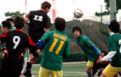

YC&AC Deadlocks Hibs 1-1 in 2009 Home Finale
YC&AC Sunday 19th December.
YC&AC closed their 2009 schedule with a 1-1 deadlock against the Hibs and remained unbeaten on the year for TML competition. more ...
JT
4 Goals at 2 Ball River
Futako Tamagawa, Saturday 18th December.
Panthers made their Nikotama debut on a cold and blustery sunny day down by the river. The pitch, heavily used throughout the year was bald and muddy in the middle and divoty on the flanks. Perfect conditions for wingers to shank crosses. Combined with the winds flying off the Tama, a beautiful game was not on the cards. more ...
BC
10 man YCAC hold Hibs to Draw
YC&AC Sunday 19th December. Hibs were of course expecting a tough game against the reigning champs at fortress Yokohama, but not a steel cage match. YCAC came in right away with several brutal tackles and a flying elbow by perennial sportsman Joe, and as we duly responded the game showed signs of boiling over. . more ...
JA
Vagabonds Brave Cold to Shrug Off Embassy
YC&AC Sunrday 13th December.
Kit there, Evans there, going well……….but no bibs, unbeknownst to me Muzzy had apparently lost them. We play in red – Embassy play in red - they don’t have bibs. A bit like America’s foreign policy over the last 65 years…..nothing ever really goes as you thought it would. But YCAC stepped in to do a Jimmy Carter at Camp David and thus stop an all out battle over who would have to play in skins on this reasonably chilly Sunday evening. more ...
RS
|  |
|
Tom Sheard rises for a header vs GR.
|
Pumas Allow Guarana to Grab Point
YC&AC Sunrday 13th December.
Up in the Yokahama Hills YCAC hosted PUMAS Vs GUARANA REP. In a very tight league, a win for the Pumas would have seen them jump up to third in the table, but with some injuries and last minute pull outs their squad was a little ‘thin’.. more ...
MR
White Water Grafting
Fukuda Denshi, Saturday 5th December.
I'd checked the weather forecast on the tele in the morning; a fluffy white cloud with a few water drops in the top right corner. OK, we're on! The long-awaited clash between Panthers and El Diego, both promoted last year and both riding high in division 2. As with last year for this fixture, Roman was leaving nothing to chance and had hired a car to ferry the stragglers to deepest Chiba. Just how many people can you get into a Suzuki “compact”?........you'd be amazed. more ...
AV
Cruel In-ten-sions
Fukuda Denshi, Sunday 6th December.
Chiba…
The name evokes images of some far flung tropical retreat, alabaster beaches, water so clear you swear you can see mermaids circling Atlantis below, a paradise where suntanned beauties serve you oversized cocktails grasped between their ample bosom, their hands free to fan you with a Phoenix’s feather. more ...
AM
A day in the life of Evans
YC&AC Saturday 5th December.
Gradually comes to consciousness……realises slowly that not only is it Saturday but Vags also have a game, good news…..then realises that the game isn’t until 19:30, day gets better. Goes back to sleep. Gets up, has a cigarette…reflects on how lucky he was not to partake in the kitless, refereeless debacle of the previous weekend at Hachioji…this prompts an unwanted image of Ged and Darren playing in their cycling shorts….starts to feel slightly queasy, but a coffee and another cigarette sorts this out (just). more ...
RS
 |
|
Joe Takeda shakes hands with the Kawasaki Frontale U18's skipper ahead of their match.
|
YC&AC falls to Kawasaki Frontale U-18
YC&AC Saturday 5th December.
Kawasaki Frontale U-18 produced a great performance culminating in a thoroughly deserved 2-0 victory over YC&AC 1st team in the newly-established Bay City Christmas Cup on a rainy Saturday evening.
Two goals in the second half put paid to the challenge of YC&AC, who battled bravely but were ultimately outclassed by a scintillating young side. more ...
JT
|